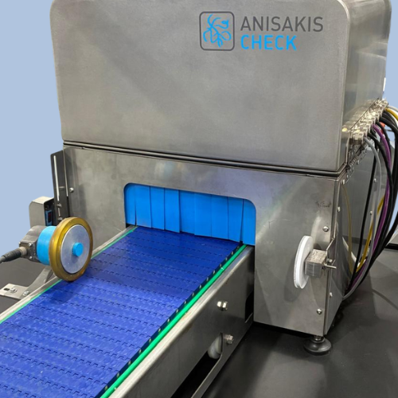
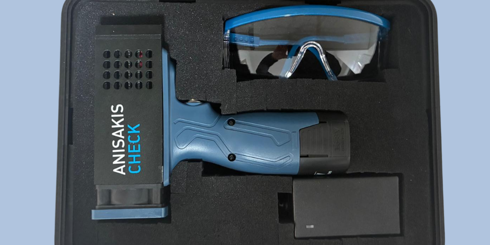
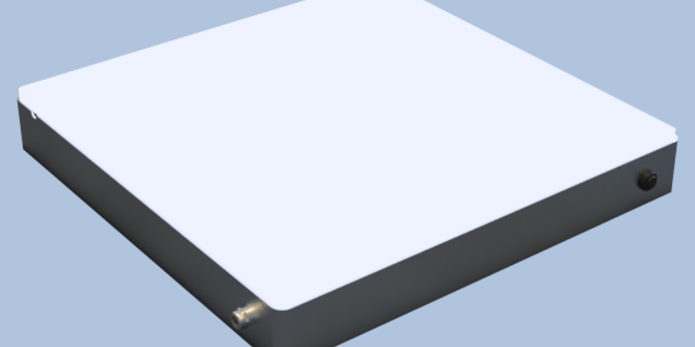
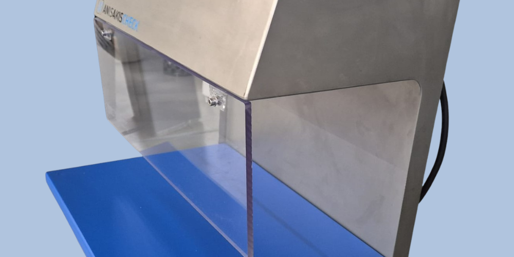
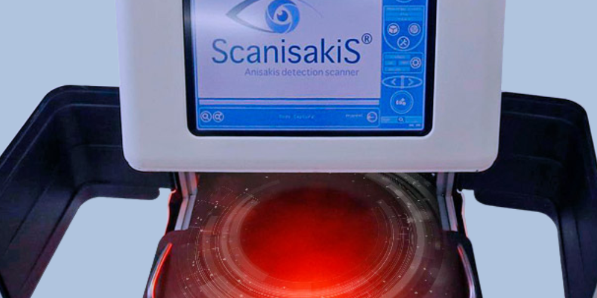
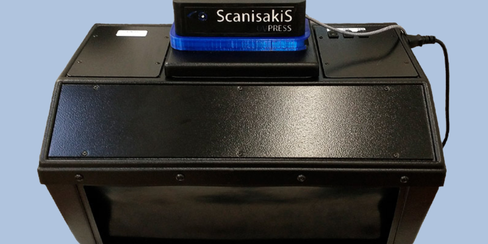

A line of Marexi-engineered equipment to detect and quantify the Anisakis parasite in fishery products across the entire food chain: from the auction market and the fishing fleet to processing industry, distribution, catering and quality-control laboratories.
Talk to our team →Six products · from manual inspection to fully automated detection

Human anisakiasis is rising worldwide, driven by a higher prevalence of the parasite, the consumption of raw or lightly prepared fish (sushi, ceviche, marinated anchovies, cold-smoked products) and increasingly sensitive diagnostic techniques. After Japan, Spain has the highest number of Anisakis intoxications in the world. EU law requires fishery products to undergo visual inspection for visible parasites before being placed on the market — a control where reliability and traceability are decisive.
There is currently no integrated system on the market able to detect, quantify and help manage the presence of the parasite in an automated way with the maturity of the SCANISAKIS® line. Marexi replaces human visual inspection with machine vision and AI, using in-house software that meets the requirements of ISO 23036 with efficiency and repeatability far above the manual method.
Correct identification of Anisakis in fish, minimising false negatives compared with human visual inspection.
Quantifies the level of infection with a minimal margin of error — Low, Medium, High or Anisakis-free — removing operator-to-operator variability.
Lot-by-lot control down to finished product, with exportable reports (PDF, Excel) that include real sample images and connect to the ERP for audits and claims.
A tiered portfolio — manual, semi-automatic and automatic — that adapts to every customer type, production volume and budget: from spot checks in a fishmonger or restaurant to detection and quantification integrated into high-capacity industrial lines.

High-power UV lamp for immediate location of Anisakis larvae in fish, during manual quality control at plants, auction markets and laboratories.

Benchtop panel back-lit with high-power LED: the sample is placed on the panel and Anisakis are identified with the naked eye, improving traditional visual inspection.

Cabin with microprocessor-controlled lighting configurations, pre-programmed to intensify the visualisation of Anisakis and other foreign bodies, supporting manual inspection.

High-resolution optical scanner and AI for individual samples: detects and quantifies in real time, showing number, location and infection percentage on the scanned image itself.

Anisakis detection on moving pieces along a conveyor belt, integrated into the industrial line: up to 1.2 m/s, with asynchronous processing of up to two pieces at once.

Standardised system compliant with ISO/DIS 23036: an optical sensor and AI software automate detection and counting of Anisakis in samples under controlled UV-A radiation, with database and reports.
The Anisakis problem affects every agent in the chain and the control institutions. Marexi offers a solution tailored to each link, with a global strategy across near and distant markets.
The technology has been validated together with Pescanova España, S.L.U. in an R&D project co-funded by the CDTI (Ministry of Science and Innovation), and is deployed on real industrial processing lines. The line sits within Regulation (EC) 853/2004 and its implementing 2074/2005 (visual parasite inspection), Royal Decree 1420/2006 in Spain, and the international ISO/DIS 23036 standard developed with the collaboration of the CSIC. Equipment is manufactured to European and American (FDA) food-use standards.
Tell us your volume, your product type and your point in the chain, and we will recommend the right Anisakischeck® configuration — from manual inspection to a fully automated line.
Email info@marexi.com →